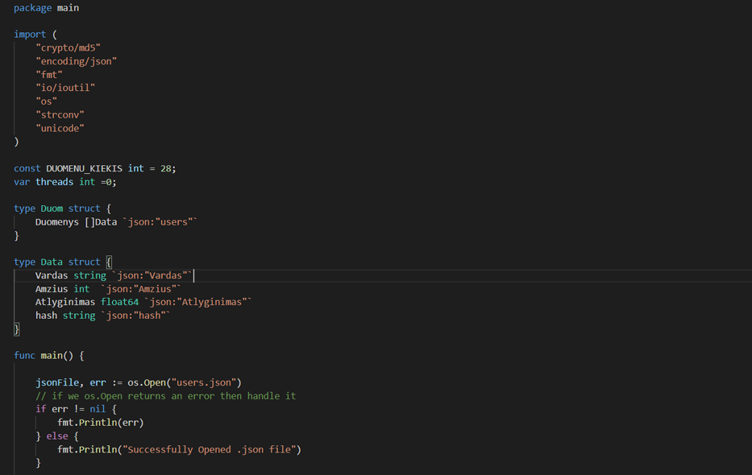
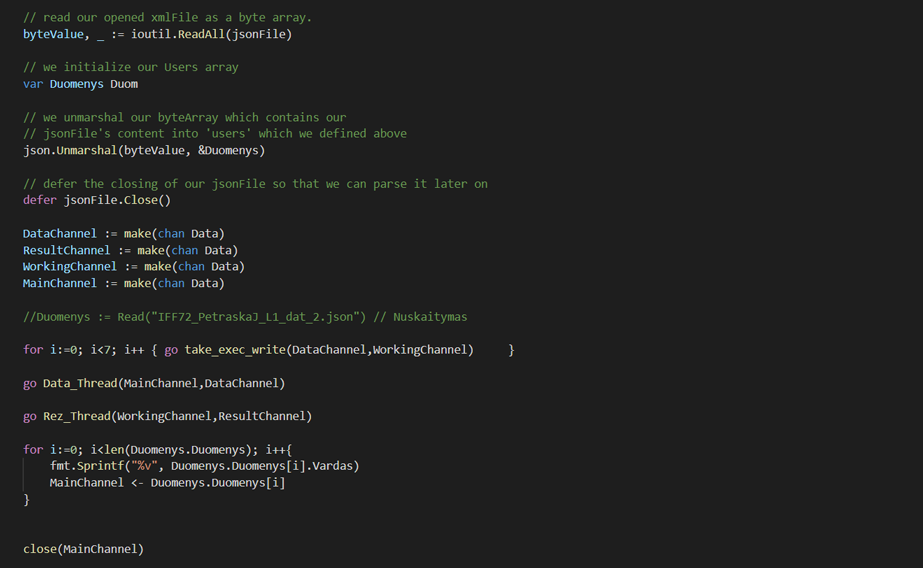
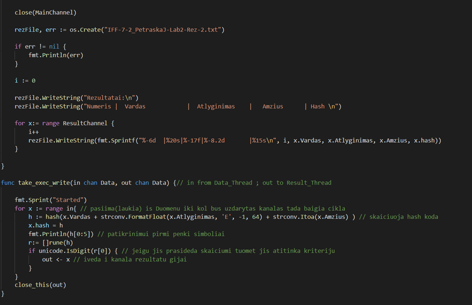
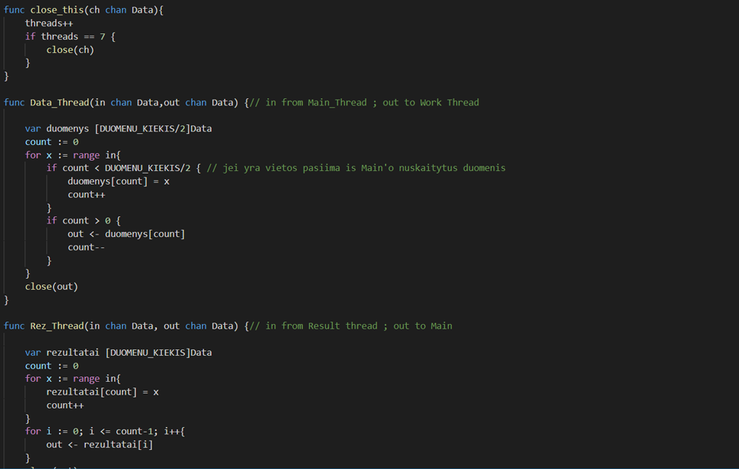
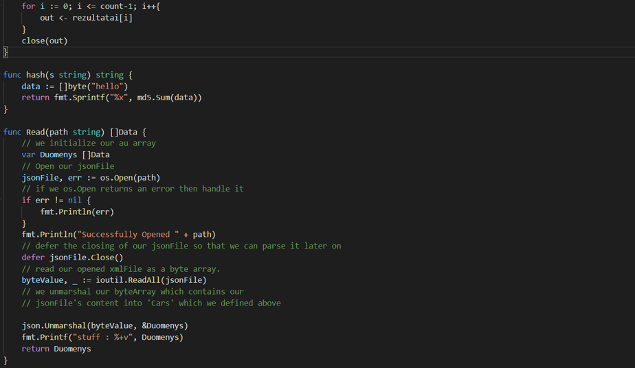

Parallel programming with GO
Learned :
Parallel programming concepts and implementation

View on github
The program is written to Read a JSON file to a custom structure
which has the Name, Age, Salary and a HasCode parameters.

From there the program puts items in a Data Thread which
creates workloads for each thread in the systems thus balancing the workloads
and improving running time.

The worker threads get data items from the distributor, in our case
the DataThread and then processes the elements (calculates hashcode) in parallel to themselves and
the main program.

Finally the ResultThread gets the data items from each thread
and then sends it back to the main channel which then then waits
for all threads to finish and proceeds to print out the results.

The threads close themselves after they have processed all the items
at their disposal and due to the balanced workload they only
close when the workload reaches zero. This saves time as each thread
is utilized.
